A computer that minds its own business.
SelvaraOS is a free desktop operating system for PCs. It collects nothing, stays smooth on older hardware, and is easy to use even if you have never touched Linux.
In development. The first release ships when it's ready.
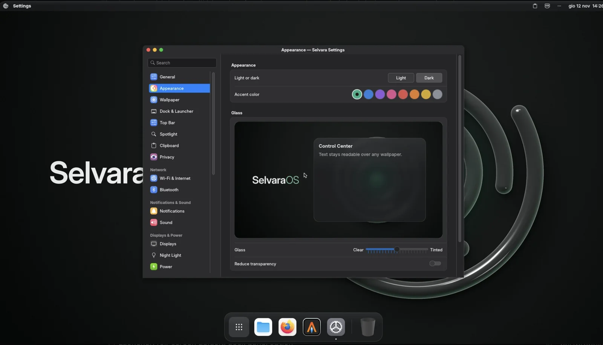
Measured on every build.
Each build of SelvaraOS goes through automated tests that record all network traffic and time the desktop. These are the current results.
Development build, 12 November 2026
| Outgoing connections during start-up, login and five minutes at rest | 0 |
|---|---|
| Login to a ready desktop | 3.7 s |
| Memory in use at rest | 1.06 GB |
| Processor use at rest | 0.3% |
Test machine: 4 GB of memory, 2 processor cores, no graphics acceleration.
Six rules decide every detail.
- Private by design
- No telemetry, no accounts, no ads. Nothing connects to the internet unless you ask, and every build is tested for it.
- Smooth on older PCs
- Built for computers with 4 GB of memory. Speed comes from careful engineering, and no effect is switched off to fake it.
- Easy from the first minute
- Install apps, update, set up Wi-Fi and printers without opening a terminal. Plain words throughout.
- Familiar if you come from a Mac
- A top bar, a dock, one search for everything and the keyboard shortcuts you already know.
- Secure from the start
- Sandboxed apps, a firewall that blocks incoming connections and no services listening on your network.
- The same everywhere
- One design and one vocabulary in every app, dialog and settings page.
A desktop of its own.
The top bar, dock, search, settings and notifications are written from scratch for SelvaraOS and run on the KWin compositor.
One search for everything
Apps, files, settings and quick sums. Press Super and Space, then start typing.
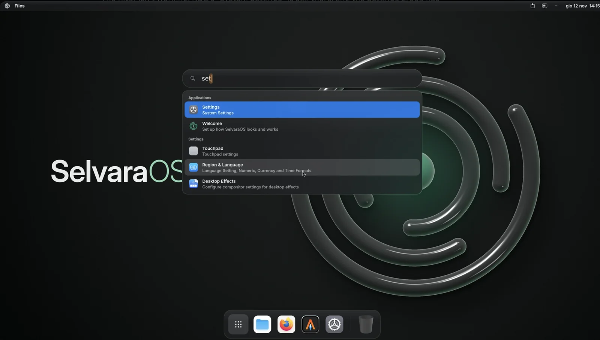
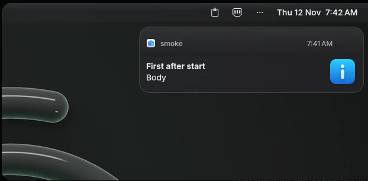
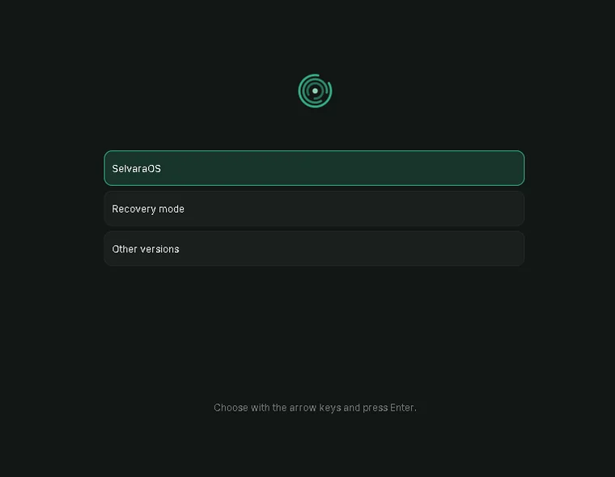
Six wallpapers, each in dark and light.
They follow your theme automatically.
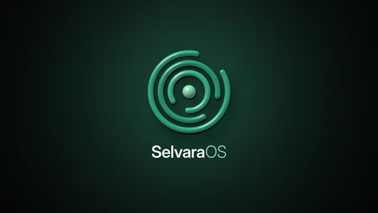
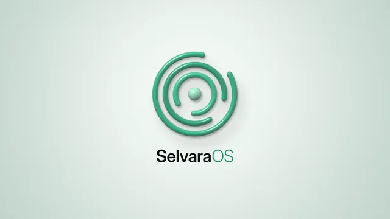
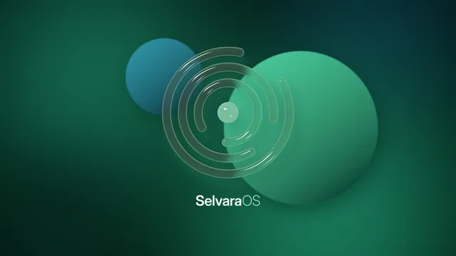
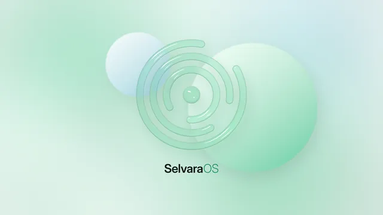
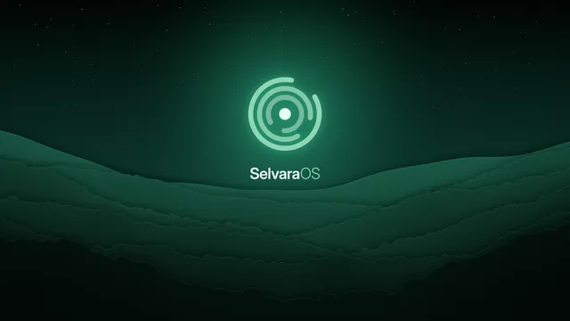
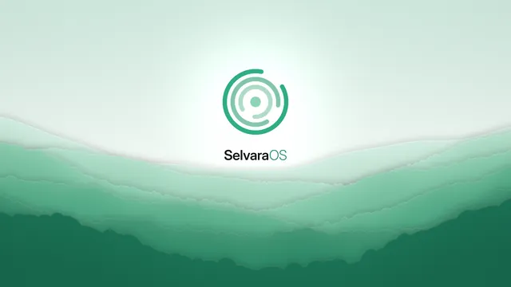
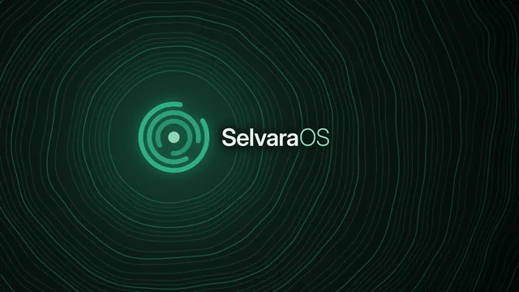
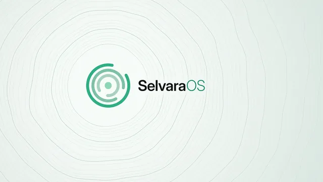
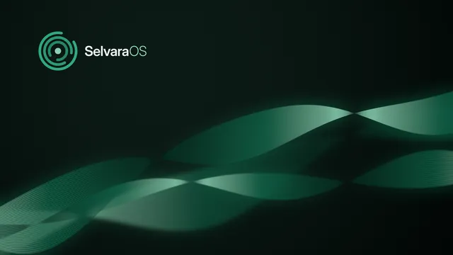
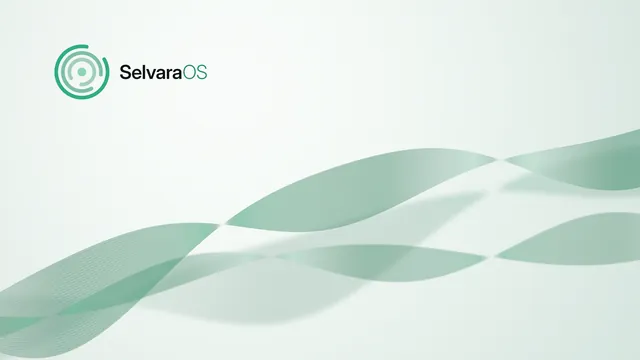
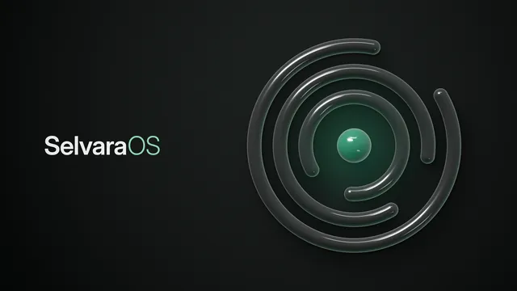
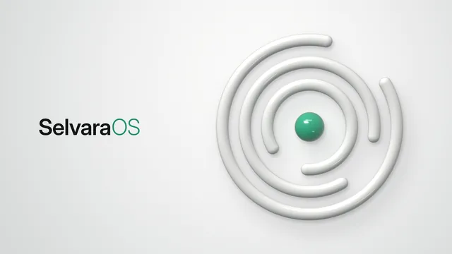
Built on proven ground.
Debian 13
The Debian stable base, with security updates until 2030 and thousands of apps.
KWin on Wayland
A modern display system and one of the most mature compositors on Linux, underneath our own desktop.
Free software
Everything we write is published under the GPL-3.0 licence. Read it, change it, share it.
Follow the project.
SelvaraOS isn't available to download yet. Join the Discord server for news and previews, or follow development on GitHub.